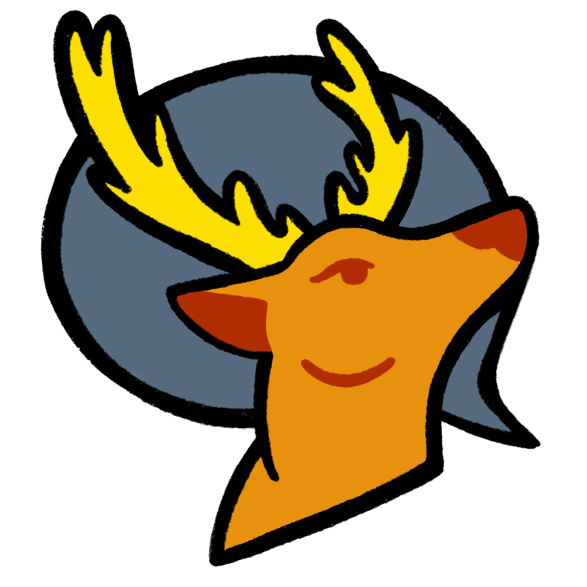

Welcome to the temporary landing page for the
Columbus Cartoon Coalition
About the group
The goal of the Columbus Cartoon Coalition is to establish consistent programming for cartoonists and comic artists in Columbus, OH. Developing a space to commune and create, we host critique sessions, gallery hops, and other activities to bring local artists together. Gathering creatives from various scenes within the city, our bi-monthly events provide ample opportunities for networking, collaboration, and community building within the medium of cartoon arts.
How to Support
If you're a comic creative (artist, writer, illustrator, etc) in and around Central Ohio, join the Columbus Cartoon Coalition's official discord
server.
Anyone can follow us on Facebook and Instagram by searching @cx3.ohio.
Past Projects
Columbus Cartoon Coalition's 2022 Anthology
Buy the anthology to support our artists
Check out our live stream.
Cartoon-ber
Check out the posts on Facebook and Instagram!